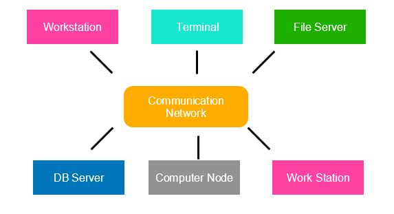

A distributed operating system is system software over a collection of independent, networked, communicating, and physically separate computational nodes. They handle jobs which are serviced by multiple CPUs. Each individual node holds a specific software subset of the global aggregate operating system. Each subset is a composite of two distinct service provisioners. The first is a ubiquitous minimal kernel, or microkernel, that directly controls that node's hardware. Second is a higher-level collection of system management components that coordinate the node's individual and collaborative activities. These components abstract microkernel functions and support user applications.
The microkernel and the management components collection work together. They support the system's goal of integrating multiple resources and processing functionality into an efficient and stable system. This seamless integration of individual nodes into a global system is referred to as transparency, or single system image; describing the illusion provided to users of the global system's appearance as a single computational entity.
